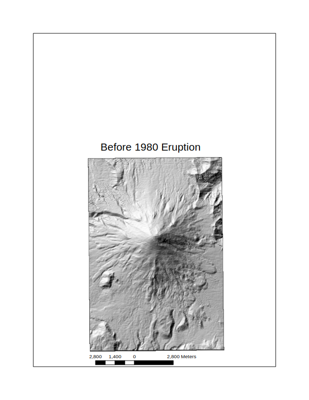
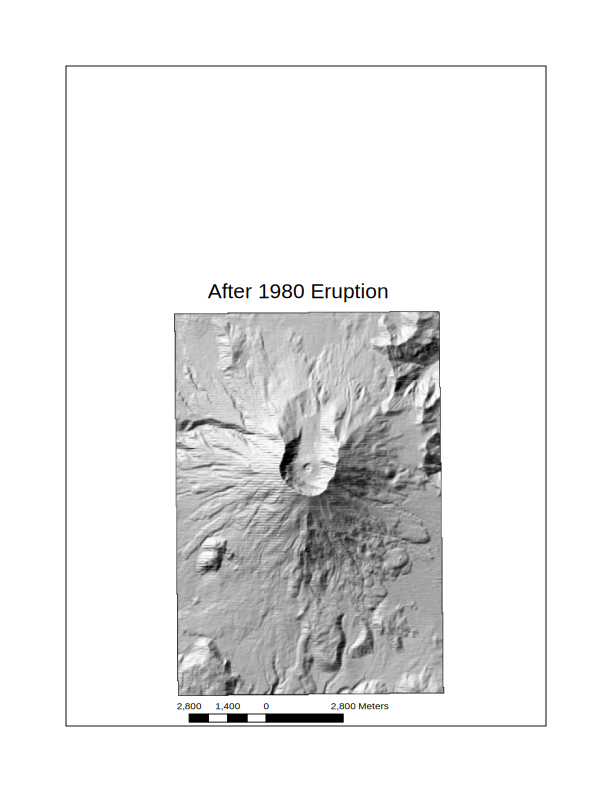
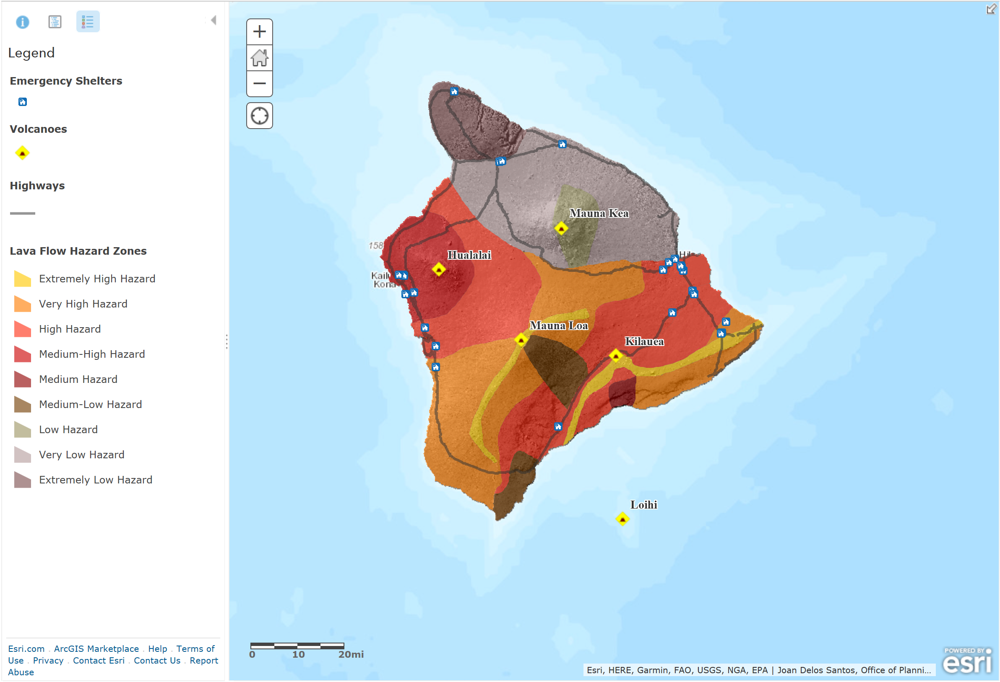
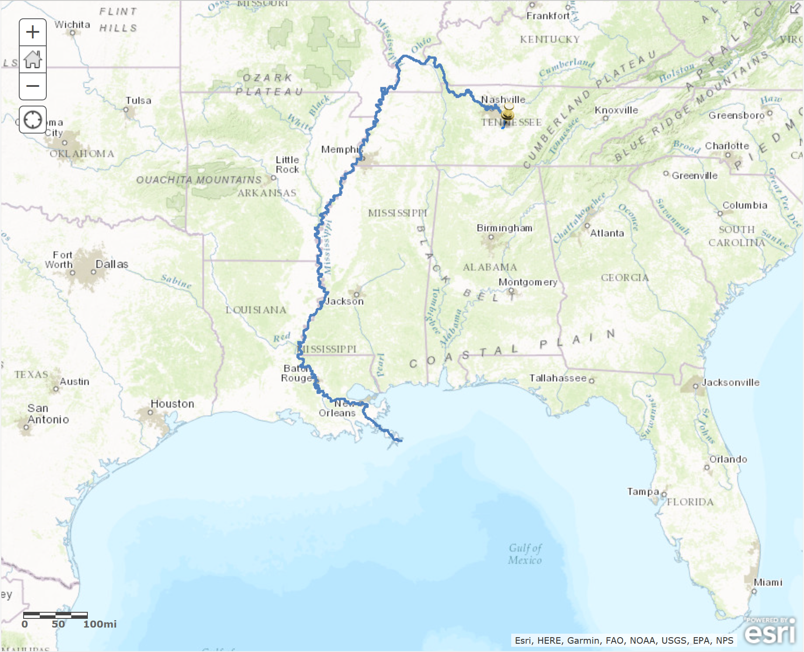

The purpose of this exercise was to create hillshade maps from digital elevation map (DEM) of Mt. St. Helens before and after the 1980 explosion in ArcMap 10.5. A 3D map was also generated of the surface topography of Mt. St. Helens after the 1980 explosion using ArcScene 10.5.
Hillshade map of Mt. St. Helens before the 1980 eruption made in ArcMap 10.5Hillshade map of Mt. St. Helens after the 1980 eruption made in ArcMap 10.53D map of Mt. St. Helens after the 1980 eruption made in ArcScene 10.5
Clinton County Quadrangle Exercise
Applications: ArcCatalog 10.5; ArcMap 10.5
The purpose of this exercise was to create hillshade maps from digital elevation map (DEM) and plot it with an orthoquad image of the Clinton County Quadrangle. The process involved in this exercise could easily be modified for other locations.
Hillshade map overlaid with the orthoquad image of the Clinton County Quadrangle made in ArcMap 10.5.
Adirondacks Exercise
Applications: ArcCatalog 10.5; ArcMap 10.5
The purpose of this exercise is to analyze the correlation between topography and bedrock geology, where gneiss, which is resistant to erosion by weathering makes up the high topography, and areas where marble is located has eroded into valleys from weathering produced by rivers. This exercise allowed me to practice manipulating a variety of shape (.shp) files and creating finished maps.
Adirondacks Rivers and Hillshade Topography made in ArcMap 10.5.Adirondacks Geology made in ArcMap 10.5. Low topography is erodable marble, high topography is erosion-resistant gneiss.
Get Started with ArcGIS Online Learn the basics of making maps online.
The purpose of this tutorial was to add layers, spreadsheet data, map symbols, configure pop-up windows and create a web app using a Hawaiian dataset including the location of major volcanoes, flow hazard areas, shelters and roads.
Hawaii Lava Flow map: with major volcanoes, hazard zones, lava flow shelters and major highways displayed in ArcGIS Online.
Identify Landslide Risk Areas in Colorado Analyze soil maps to predict future mud flows in rain-soaked Colorado.
The purpose of this tutorial was to open up a geologic hazard map for Boulder County, Colorado and look at areas of overlap between the high hazard areas and rivers which had flooded to +200m, and to mark those those intersections with yellow fill and label with landslide symbols. This tutorial also covered enriching those intersections with demographic and landscape statistics that would show up in the pop-up windows.
Boulder County Colorado landslide hazard map: geologic hazard, stream overflow, and landslide hazard locations indicated in ArcGIS Online.
No Dumping - Drains to Ocean Learn about finding upstream watersheds and downstream flow paths from point locations.
The purpose of this tutorial was to add a storm drain to a map near Blackman Elementary School, Tennessee, then plot the watershed that feeds the storm drain, and then calculate the flow path of water from the the storm drain.
Blackman Elementary School, Tennessee drainage flow path map made in ArcGIS Online.


{kind=link}
{kind=link}
{kind=link}
{kind=link}